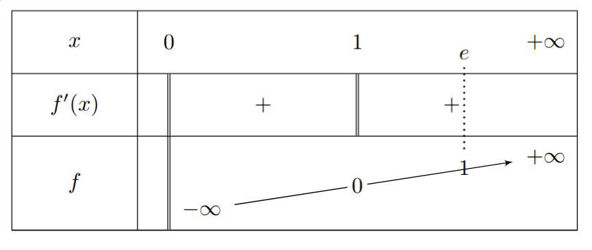
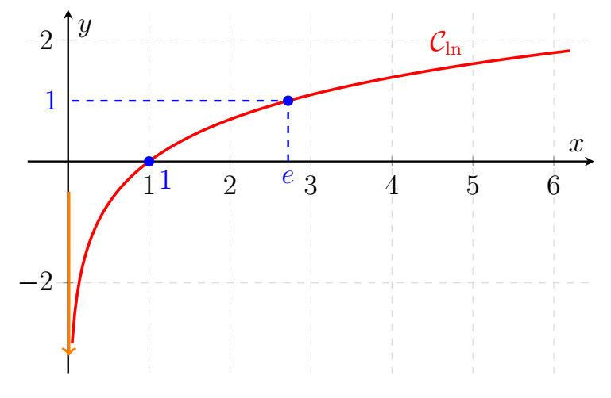

En 1614, un mathématicien écossais, John Napier (1550 ; 1617) ci-contre, plus connu sous le nom francisé de Neper publie « Mirifici logarithmorum canonis descriptio ». Dans cet ouvrage, qui est la finalité d’un travail de 20 ans, Neper présente un outil permettant de simplifier les calculs opératoires : le logarithme. Neper construit le mot à partir des mots grecs « logos » (logique) et arithmos (nombre). Toutefois cet outil ne trouvera son essor qu’après la mort de Neper. Les mathématiciens anglais Henri Briggs (1561 ; 1630) et William Oughtred (1574 ; 1660) reprennent et prolongent les travaux de Neper. Les mathématiciens de l’époque établissent alors des tables de logarithmes de plus en plus précises. L’intérêt d’établir ces tables logarithmiques est de permettre de substituer une multiplication par une addition (paragraphe II). Ceci peut paraître dérisoire aujourd’hui, mais il faut comprendre qu’à cette époque, les calculatrices n’existent évidemment pas, les nombres décimaux ne sont pas d’usage courant et les opérations posées telles que nous les utilisons ne sont pas encore connues. Et pourtant l'astronomie, la navigation ou le commerce demandent d’effectuer des opérations de plus en plus complexes.
On appelle fonction logarithmique népérien la fonction notée $\ln$ qui est définie sur $]0\;;\ +\infty[$ et qui vérifie $(\ln (x))'=\dfrac{1}{x}\ $ et $\ \ln 1=0$
\(\displaystyle \begin{array}{rcl} \ln\ :\ ]0\;;\ +\infty[ & \longrightarrow & \mathbb{R} \\ x & \longmapsto & \ln x \end{array}\)
Soit $u$ une fonction définie sur un intervalle $I$ de $\mathbb{R}$ alors :
Les propriétés fondamentales de la fonction logarithmique, $\ln$, sont :
La fonction $\ln$ est strictement croissante sur son domaine $]0\;;\ +\infty[$, c'est-à-dire que :
$ \forall a, b \in ]0\;;\ +\infty[, \quad a < b \implies \ln a < \ln b.$
Soit $a$ un nombre rationnel strictement positif.
Croissances comparées :
Soit \(\alpha\) un nombre réel strictement positif (\(\alpha > 0\)).
Au voisinage de \(0^+\) et de \(+\infty\), la fonction puissance l'emporte sur la fonction logarithme
népérien :
Preuve de quelques limites
Montrons que $\displaystyle \lim\limits_{{x \to 0^+}} x^{\alpha}\ln(x) = 0^{-}$ pour $\alpha=1$
pour tout $x\in]0;+\infty[,$ en posant $X=\frac{1}{x}$, on a : $x\ln x=-\frac{\ln X}{X}$
ainsi, $\displaystyle \lim\limits_{{x \to 0^{+}}} -\frac{\ln(X)}{X}=0^{-}$
Donc $\displaystyle \lim\limits_{{x \to 0^+}} x^{\alpha}\ln(x) = 0^{-}$
Exemple
Déterminer les limites suivantes :
Exercice d'application
Déterminer les limites suivantes :
Soit $u(x)$ une fonction strictly positive.
Cherchons $\lim\limits_{{x \to a}} \ln[u(x)]$
$\textbf{Si} \begin{cases} \lim\limits_{{x \to a}} u(x)=l\\[2mm] \lim\limits_{{X \to l}} \ln(X)=l' \end{cases} \implies \lim\limits_{{x \to a}} \ln[u(x)]=l' $
Exemple
Calcule la limite suivante :
$\displaystyle \lim\limits_{{x \to +\infty}} \ln\left(\dfrac{x^{2}}{2x^{2}-1}\right)$
Solution
Soit à déterminer la limite suivante : $\displaystyle \lim\limits_{x \to +\infty} \ln\left(\frac{x^2}{2x^2 - 1}\right)$
Étape 1 : Limite de la fonction rationnelle à l'intérieur du logarithme
Quand $x \to +\infty$, le comportement en $+\infty$ d'une fonction rationnelle est donné par le rapport
de ses termes de plus haut degré :
$
\displaystyle
\begin{aligned}
\lim\limits_{x \to +\infty} \frac{x^2}{2x^2 - 1} &= \lim_{x \to +\infty} \frac{x^2}{2x^2}\\
&= \frac{1}{2}
\end{aligned}
$
Étape 2 : Application du théorème de composition des limites
On pose $u(x) = \frac{x^2}{2x^2 - 1}$.
$\text{Si } \begin{cases} \lim\limits_{x \to +\infty} u(x) = \dfrac{1}{2} \\[2mm] \lim\limits_{X \to \frac{1}{2}} \ln(X) = \ln\left(\dfrac{1}{2}\right) \end{cases} \text{ alors } \lim\limits_{x \to +\infty} \ln\left[u(x)\right] = \ln\left(\frac{1}{2}\right)$
Étape 3 : Simplification du résultat
En utilisant la propriété $\ln\left(\frac{1}{a}\right) = -\ln(a)$, on obtient : $\ln\left(\frac{1}{2}\right) = -\ln(2)$
Conclusion :
$\displaystyle \lim\limits_{x \to +\infty} \ln\left(\frac{x^2}{2x^2 - 1}\right) = -\ln(2)$
Exemple
$f(x) = \frac{\ln(x^{2}+2x+9)}{x}$
$f(x) = \ln\left[\frac{x^{2}+2x+9}{x-2}\right]$
Soient \(u\) et \(v\) deux fonctions dérivables et strictement positives sur un intervalle \(I\) de \(\mathbb{R}\).
Exemples :
Déterminer la fonction dérivée de chacune des fonctions suivantes :
Soit \(f\) la fonction définie par \(f(x) = \ln(x)\).
1. Domaine de définition \(D_{f}\) :
\(f(x)\) existe si et seulement si \(x \in \mathbb{R}^*_+\).
Ainsi, le domaine de définition est :
$ D_{f} = \mathbb{R}^*_+ = ]0 \,;\, +\infty[ $2. Limites aux bornes de \(D_{f}\) :
En \(0^+\) :
$ \lim\limits_{x \to 0^+} \ln(x) = -\infty $(La droite d'équation \(x = 0\) est asymptote verticale à la courbe \(\mathcal{C}_f\).)
En \(+\infty\) :
$ \lim\limits_{x \to +\infty} \ln(x) = +\infty $3. Dérivée et sens de variation :
Pour tout \(x \in ]0 \,;\, +\infty[\), \(f\) est dérivable et :
$ f'(x) = \frac{1}{x} $Pour tout \(x \in ]0 \,;\, +\infty[\), \(f'(x) > 0\). On en déduit que la fonction \(f\) est strictement croissante sur \(]0 \,;\, +\infty[\).

4. Branche infinie de ln
$\lim\limits_{{x \to +\infty}} \frac{ln(x)}{x}=0$ donc ln admet une branche parabolique de direction (Ox) au voisinage de +$\infty$.

Pour résoudre les équations comportant des logarithmes népériens, on peut procéder comme suit :
Exemple :
Résoudre dans \(\mathbb{R}\) les équations suivantes :
Correction de l'exemple :
\(\Delta = 1 + 32 = 33 > 0 \implies x_1 = \frac{1-\sqrt{33}}{8} \notin D_v\) et \(x_2 = \frac{1+\sqrt{33}}{8} \in D_v\).
Pour résoudre une inéquation comportant des logarithmes :
Exemple :
Considérons les inéquations suivantes :
Correction de l'exemple :
Pour résoudre un système comportant des termes en \(\ln\), on utilise souvent un changement de variable de la forme \(X = \ln(x)\) et \(Y = \ln(y)\) pour se ramener à un système linéaire classique.
Exemple :
Résoudre dans \(\mathbb{R} \times \mathbb{R}\) le système suivant :
\( (S) : \begin{cases} x + y = 7 \\ \ln(x) + \ln(y) = \ln(12) \end{cases} \)Correction de l'exemple :